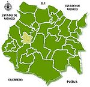

De: La Frikipedia, la enciclopedia extremadamente seria.
De: La Frikipedia, la enciclopedia extremadamente seria. De: La Frikipedia, la enciclopedia extremadamente seria.
| De la serie Países del planeta tierra: | |||||
| Morelos | |||||
|---|---|---|---|---|---|
| |||||
| Lema: La tierra volverá a quienes la | |||||
| Himno: La Marcha | |||||
| 
No wey!, no es México!, es el estado | |||||
| Capital | {{{capital}}} | ||||
| Mayor ciudad | | ||||
| Lenguas oficiales | Morelense, Cuenavaquense, Tepoztlense, Ocoteniense, Emiliano-Zapataense... | ||||
| Gobierno | Democrácia con raíces Comunistas | ||||
| Presidencia: | Oso panda con brazos de motosierra | ||||
| Área | México | ||||
| Población | 1,612,921 habitantes 1/8 del DF pero para allá vá... | ||||
| Moneda | Piratería, Tepache, Peso, Tierras... | ||||
| Zona horaria | México Hora Central (+1231) | ||||
| Dominio Internet | .mx (la MX es de MORELOX, solo que se les chispoteó) | ||||
| Código telefónico | 777-666-66-66
| ||||
| Se estima que para el sábado 10 de septiembre del año 2016 la población aumente a 100 habitantes/h y IP anónima muera, haciendola a 99 habitantes/h | |||||
Morelos (モレロス, 莫利, मोरेलोस, موريلوس, Gñap, Morelous, Cuernalata Mugrelos) es el estado número 33 de los 31 estados de México, del tamaño de 3 Distritos Federales (exceptuando en población), es el estado de "La Eterna Chinga Primavera".
Nombrado como la localización oficial del quinto pino, el 2o lugar en la selección de Capital Nacional y a su vez, uno de los estados con más fauna que habitantes.
El estado de Morelos fue fundido fundado como estado oficial de la República-Monarquía Mexicana el 17 de abril de 1869, mismo día en que se inventó la cuchara, en la época prehispánica, Morelos no era más que un terreno valdío donde los Olmecas y los habitantes del altiplano central botaban su basura.
Un buen día, mientras los prehispánicos tomaban la autopísta "México-Acapulco" dieron en un retorno dirigído hacia el este del país, en el cual aprovecharían para comer en la Fonda Flores en las afueras de Alpuyeca, como sabían que la quincena no les iba a alcanzar totalmente para rentar señoritas en Acapulco ni para irse de parranda al antro, decidieron entonces seguír al este hasta llegar a colima... lamentablemente, el Olmeca en el que se transportaban murió de deshidratación por ser una zona árida, por lo cual quedaron varados en un sítio llamado Xochicalco.
En este sítio, mientras caminaban , escucharon musica, por lo cual fueron corriendo y terminaron dando en el antro "El Templo de Quetzalcóatl". Un antro bastánte recurrido por los Teotihuacanos, los Mayas y los Mixteco-Zapotecas.
Durante su viaje, otros prehispánicos comenzaron su emigración del Distrito Federal tras la crisis económica al caér el Imperio Tolteca, buscando mejores tierras, mejor ganado y mejor clima... para ello muchas de las tribus cercanas a Morelos dieron ahí. De su emigración, el estado comenzó a fundarse por los recientemente creados (en aquélla epoca animal!) municípios de Tetela, Hueyapan, Tepoztlán y Jumiltepec (si! esos bichitos que saben ricos cuando los compras cubiertos de chocolate).
Los tlahuicas por su parte instauraron lo que más tarde se conocería como Cuauhnáhuac (en Náhuatl "Estrella Chilanga del Norte"), avenída que podría considerarse fundamental para que un chilango encuentre el camino a casa.
En princípios del año 1397, Moquiuix, un soberano Mexica reinó Morelos, terminando así con la paz prometida por tantos años hacia los Morelenses, dando inicio en Morelos al dominio Meshica que se extendería hasta que los espiñoles llegaran a ofrecernos caballos, vacas, cristianismo y otras masacres más.
Se sigue creyendo hasta hoy, que Morelos en ese entonces se encontraba dividido en dos partes: la primera Cuernavaca y la segunda Oaxtepec; división hecha con el simple proposito de pagar tributo con hermosas virgenes, toboganes de agua (especialmente provenientes de Oaxtepec), guerreros Guatemaltecos y uno que otro Suizo a Tenochtitlán, la tierra del maíz y la sangre.
Después de que Miguel Hidalgo diera las campanadas de la independéncia, su levantamiento tuvo repercusiónes en Morelos, haciendo que también se unieran a la brigada.
Por aquélla época, Jose María Morelos y Pavón fue uno de los independejistasncistas más importantes, haciendole acreedor a una recompensa por su cabeza pues el virrey Venegas determinó que debía ser exterminado.
Un suceso relevante de Morelos es el Sitio de Cuautla, consistió en la fortificación y la aislación total de T.V. por cable, Internet y Roaming Nacional agua, servicios médicos y alimentos entre otras necesidades como el baño público a los Cuautlenses.
Morelos (el independencista) decidió defender la ciudad de los maleantes invasores, robandoles artillería y armas, además de contar con 5,000 hombres dispuestos a morir por Morelos (el estado).
El 2 de mayo, después de enfrentar a los realista por casi un mes Morelos (el independencista) obtuvo noticias de que el ejercito realista fue ahullentado por una fuerza malígna el famosisimo (solo por acá)Narciso Mendoza alias "El Chamuco" "El Niño Artillero", sí, el niño artillero que agarró un cañon y disparo a los realistas haciendo que corrieran como mujeres, Morelos y algunas de sus gentes salieron ilesos del Sitio y se dirigieron rumbo a Ocuituco no sin antes claro condecorar a Narciso con la medalla del Valor por enfrentar a los Vietnamitas Surrealistas, quedando Cuautla en poder de Calleja, este hecho marcó para el país una nueva etapa en la consecución de la guerra.
Emiliano Zapata, el caudillo, fue consignado al servicio de armas por intentar defender las tierras de Villa diAyala y Anenenenenenenenecuilco.
A finales del añi 1910 Pablo Torres Burgos, Anenenenencuilquista, tuvo bastantes entrevistas con la Junta Revolucionaria de San Antonio, Texas, y regresó a Morelos provisto de super-poderes para organizar como jefe, la revolución del sur. Un año después Cuautla se vio asediada (nuevamente) por las fuerzas RBD's, desde mediados de abril.
Tras comenzar el asedio el día 13 de mayo, el día 18 de mayo el coronel Munguía abandonó el concurso la plaza al frente de sus tropas. Los atacantes revolucionarios estaban comandados por el general Zapata. Ya en este tiempo Zapata era jefe de la Revolución Morelense y futura cara en los billetes de 500.
Después de 7 años de lucha y despapaye, la Constitución Federal del 5 de febrero de 1917, reconoció a Morelos como Estado Libre y Soberano (a huevos), quedando, por consiguiente, sin ningún efecto la disposición huertista que lo había considerado un territorio.
Cuernavaca volvió a quedar en poder de las fuerzas Zapatistas para ser ocupada definitivamente por el gobierno Carrancista el 8 de diciembre de 1918.
El 10 de abril de 1919 Zapata muere en la emboscada que le puso el general Guajardo en la hacienda de Chinameca. Junto a él murieron Agustín, Cortés y Lucio Labastida.
No era el lugar de la eterna primavera por nada, desde 1959 el clima en Morelos era considerado el mejor clima del mundo especificamente en Jiutepec (no es coña), esto fue gracias a la intervención y sumisión de Bárbara Hutton, la mujer que construyo lo que actualmente se conoce como Camino Real Sumiya, un hotel con pinta Otaku en medio de la majestuosa urbanidad y grafitti que adornan este bello estado.
Actualmente el clima es un asco, la temperatura máxima, diariamente en el centro del estado es de 33ºC, la menor es de 25ºC durante el día, durante la noche puede que siga igualita o se haya refrescado un poco, pero de 25º no pasamos.
En el municipio de Tepoztlán y el norte del estado, por ser una altitud mayor, el clima es más fresco (además de que en época de lluvia la carretera México-Acapulco huele a Pinol).
Al sur del país casi todo el año esta árido (me alégra vivir al norte).
Morelos es el estado líder en producción de Rosas, Ejotes e Higos, además de azúcar, sal, hagua, tamales, tortas, pozole, tacos, bebés y pijos.
El estado de Morelos cuenta con el servicio de Electricidad en todo el estado, lo único que no presenta en su totalidad es la televisión por cable, dejando aproximadamente al 30% de los Morelenses sin información.
El 40% de los Morelenses tienen un titulo universitario, dejando al otro 40% con el certificado de Kinder y Preparatoria y al 20% limpiando parabrisas en la calle.
Durante la huelga de maestros llevaba a cabo en el 2008, 4 meses de inactividad revirtieron las cifras a 40% con Kinder y preparatoria, 20% con título universitario y 40% limpiando parabrisas en las calles. un .9% de la población emigro tras esta estupidéz manifestación.
Cuenta con 33 municipios de los cuales en uno vivo yo:
Amacuzac, Atlatlahucan, Axochiapan, Ayala, Coatlán del Río, Cuautla, Cuernavaca, Emiliano Zapata, Huitzilac, Jantetelco, Jiutepec, Jojutla, Jonacatepec, Mazatepec, Miacatlán, Ocuituco, Puente de Ixtla, Temixco, Temoac, Tepalcingo, Tepoztlán, Tetecala, Tetela del Volcán, Tlalnepantla, Tlaltizapán, Tlaquiltenango, Tlayacapan, Totolapan, Xochitepec, Yautepec, Yecapixtla, Zacatepec de Hidalgo y Zacualpan.
Adivina!.
Las mismas que hay en todo el país predominan en Morelos, desde los Cholos hasta los Fresas, contamos con una distribución de:
Notarás que hay una mayor población de canis por acá, así que si llegas a venir de vacaciones, la ley del gobierno de Morelos te permíte matar a no más de 1 cani por hora. Contribuye a la sociedad.
Autor(es):